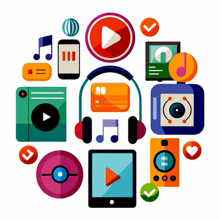

AULA 7
Multimídia e Online – Explorando o Mundo Digital
Nesta aula, vamos mergulhar no mundo da multimídia (fotos, músicas, vídeos) e dar os primeiros passos para entender como o computador nos conecta ao vasto universo online!
O que é Multimídia?
Multimídia é a combinação de diferentes formas de conteúdo, como texto, imagens, áudio e vídeo. Seu computador é uma central multimídia incrível! Você pode ver fotos da família, ouvir suas músicas favoritas e assistir a vídeos educativos ou de entretenimento.
- Imagens: Fotos que você tira, desenhos, gráficos.
- Áudio: Músicas, podcasts, gravações de voz.
- Vídeo: Filmes, séries, vídeos do YouTube, videochamadas.

Reproduzindo Multimídia no Computador
Para ver ou ouvir seus arquivos multimídia, você usa programas específicos:
- Visualizador de Fotos: Para ver suas imagens (geralmente abre automaticamente ao clicar duas vezes na foto).
- Reprodutor de Música/Vídeo: Programas como o Windows Media Player, VLC Media Player ou aplicativos de streaming como Spotify e YouTube.
- Controles: A maioria tem botões de "Play", "Pause", "Avançar", "Voltar" e controle de volume.
O Mundo Online: Conectando-se à Internet
A internet é uma rede gigante que conecta computadores em todo o mundo. É por ela que você acessa sites, redes sociais, assiste vídeos online e muito mais!
- Navegador de Internet: É o programa que você usa para "navegar" na internet (ex: Google Chrome, Mozilla Firefox, Microsoft Edge).
- Wi-Fi e Cabo de Rede: São as formas de conectar seu computador à internet. Wi-Fi é sem fio, cabo de rede é com fio (mais estável).
- Sites e Endereços: Cada página na internet tem um endereço único (URL), como www.google.com.